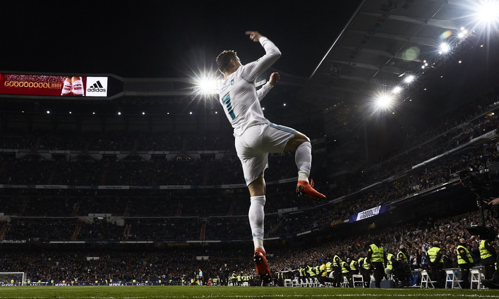

| Dato | Estadistica |
|---|---|
| Partidos jugados | 152 |
| Goles | 120 |
| Promedio de gol | 0.79 |
| Dobletes | 33 |
| Tripletes | 7 |
| Pokers | 1 |
| Goles de cabeza | 20 |
| Goles de tiro libre | 12 |
| Goles en fase de octavos | 20 |
| Goles en fase de cuartos | 23 |
| Goles en fase de semis | 13 |
| Goles en finales | 4 |
| Goles de penal | 15 |
| Asistencias | 35 |
Hablar de Cristiano Ronaldo es hablar del futbolista más letal en la historia de la Liga de Campeones, con una capacidad para agigantarse en el torneo más importante de clubes del planeta que le ha servido para ganarse el mote de "Mr. Champions".

Y es que el astro portugués registra más goles que nadie en la historia de la UEFA Champions League con 134 anotaciones, 18 más que su más cercano perseguidor y antagonista favorito: Lionel Messi.

Con postales como el bombazo al Porto en 2009, la chilena en Turín en 2018 hasta su último doblete conquistando el Camp Nou, CR7 siempre ha sido determinante, registrando 105 goles con la camiseta del Real Madrid, 15 en el Manchester United y 14 con la Juventus, levantando 5 Orejonas en las cuales se proclamó campeón de goleo en todas.

Una capacidad goleadora que destroza récords a cada paso, pues es el jugador con más tantos en fases definitivas con 67, además de registrar 25 anotaciones en cuartos y 15 en semifinales, récord de más goles en una sola campaña, de títulos de goleo y único futbolista en la historia en marcar en 3 finales de Champions distintas.
